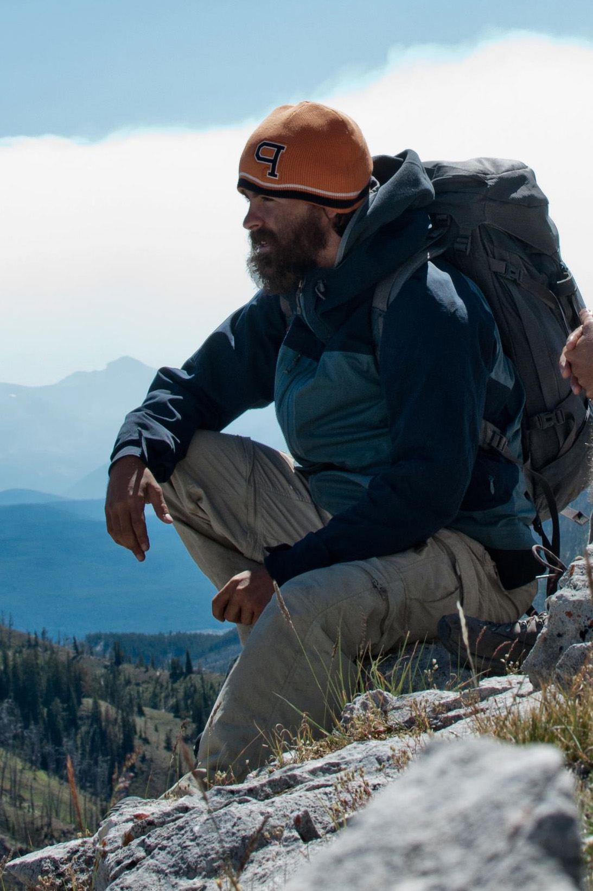

Principle Investigator |
CV
I am an Assistant Professor in the
School of Earth and Ocean Sciences, University of Victoria. The goal of my research is to use sedimentary rocks to better understand how the
Earth-system
responds to changing boundary conditions. The history of life and climate on Earth is intricately tied to the coevolution of the biosphere, atmosphere, and lithosphere over billions of years. Ancient sediments are the fragmented historical record
of these systems, and detailed reconstructions of key moments in the development of our planet offer a critical perspective on the rarity and role of life in our universe. Moreover, the ancient sedimentary record provides a baseline to
differentiate naturally occurring change from human caused change and can reveal feedbacks that may become critically important in future climate change. I investigate this sedimentary record by merging modern data science tools and models with
geospatial, geochemical, and stratigraphic data collected during detailed field work. Check out the
research page for more information about specific projects.
Email: blakedyer[at]uvic.ca | Twitter: [at]bcdyer8 | Github: blakedyer |
 Connor van Wieren (he/him/his)
PhD candidate (2020 - present)
Connor van Wieren (he/him/his)
PhD candidate (2020 - present)
Connor received his BSc from the University of Victoria in 2020 and is now a PhD student in the School of Earth and Ocean Sciences. His current research involves studying stable isotope geochemistry and stratigraphy of carbonates in the
Neoproterozoic
(specifically Ediacaran) Miette Group of the Canadian Rockies. Broadly, He is interested in understanding how biogeochemical signals in the carbon isotopic record of marine carbonates are interpreted and how they fit into the early evolution of
life.
Email: cvanwier[at]uvic.ca | Twitter: [at]ConnorVanwieren | Github: VanWieren
Stacey Edmonsond (she/her/hers)
PhD candidate (2021 - present)
Prior to joining the School of Earth and Ocean Sciences, Stacey received her bachelor’s degree from Princeton University in 2021. She is broadly interested in understanding how changes in Earth’s climate and environment are translated to the
stratigraphic record. Currently, she is studying the sedimentology and stable isotope geochemistry of Paleozoic shallow carbonates in the Canadian Rockies. By integrating detailed field observations with high-resolution geochemical and geospatial
data, her research aims to improve reconstructions of ancient seawater chemistry and quantify sources of uncertainty in chemostratigraphic correlation.
Email: sedmonsond[at]uvic.ca | Twitter: [at]StaceyEdmonsond | Github: sedmonsond